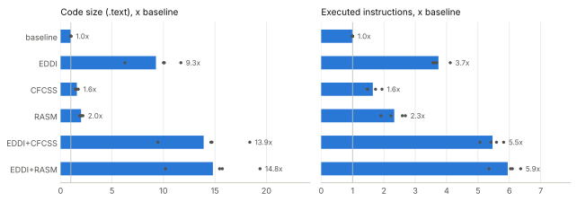

Four applications, three fixes and a fault-injection evaluation
Formal Languages and Compilers, A.Y. 2026/27, Politecnico di Milano
Supervisors: Davide Baroffio, Emilio Corigliano
ASPIS is a set of LLVM passes that hardens programs against soft errors by duplicating the computation (EDDI and its variants) and by checking the control flow with signatures (CFCSS, RASM and others). The goals of the project were (1) to protect C applications with ASPIS, (2) to verify the protection with fault injection and (3) to integrate the applications into the ASPIS main branch for regression testing.
ptrace and ran 56,000 experiments that flip a bit in a register or invert a conditional jump, on six hardening configurations.The fixes and the tests are ready as four patches for the ASPIS repository (aspis-integration/). All the code, the raw results and the scripts that produce every table and figure are in the repository (Appendix A). The use of a large language model is declared in Section 8.
A particle strike can flip a bit in a register or in a memory cell. The hardware is not damaged, but the program may compute a wrong result without noticing it (a silent data corruption, SDC), crash, or hang. Software-Implemented Hardware Fault Tolerance (SIHFT) protects programs that run on unprotected hardware by transforming their code. Data-flow techniques duplicate the computation and compare the two copies at selected points. Control-flow checking (CFC) techniques give each basic block a signature and check at run time that the blocks are executed in an order allowed by the control-flow graph.
ASPIS (Automatic Software-based Protection and Integrity Suite, Baroffio et al., ACM TODAES 2024) implements these transformations as passes on the LLVM intermediate representation (IR). Its driver, aspis.sh, compiles the sources to IR without optimisations, links them, and runs:
FuncRetToRef: every function that returns a value gets a _ret version that writes the result through an extra pointer parameter, so that the two copies of the program can receive two copies of the result;to_harden;DuplicateGlobals, which keeps the duplicated global variables consistent.Every hardened function f gets a version f_dup that takes each parameter twice and executes both copies of the computation; each global variable gets a _dup copy. When a check fails the program calls DataCorruption_Handler (data checks) or SigMismatch_Handler (signature checks), two functions that the application must define. Checks on pointers do not compare the two pointers, which legitimately differ when they point to the two copies of a variable, but the values they point to; ASPIS knows the pointed type through the TypeDeductionAnalysis library.
As an example, this is how EDDI (with our fixes) transforms int scale(int v) { return v * g; }, where g is a global variable. The result is returned through a pointer (FuncRetToRef), every parameter comes twice (%0 and %2 are the two copies of v, %1 and %3 of the result pointer), every load and multiplication is executed twice, and the two results are compared before they leave the function:
define void @scale_ret_dup(i32 %0, ptr %1, i32 %2, ptr %3) {
VerificationBB:
%4 = alloca i32 ; v
%5 = alloca i32 ; its copy
store i32 %2, ptr %4
store i32 %0, ptr %5
%6 = load i32, ptr %4
%7 = load i32, ptr %5
%8 = load i32, ptr @g
%9 = load i32, ptr @g_dup
%10 = mul nsw i32 %6, %8
%11 = mul nsw i32 %7, %9
%12 = icmp eq i32 %10, %11 ; consistency check
br i1 %12, label %13, label %ErrBB
13:
store volatile i32 %10, ptr %3 ; "return" both copies
store volatile i32 %11, ptr %1
ret void
ErrBB:
call void @DataCorruption_Handler()
unreachable
}The tests of ASPIS are listed in testing/config/tests.toml. The harness (pytest test.py in testing/) compiles each test with the 11 data protection options (none, EDDI and its variants --multiple-errbb and --coarse-grained, REDDI and the same variants, sEDDI, FDSC) combined with the 5 control-flow options (none, CFCSS, RASM, RACFED, inter-RASM), runs it, and compares its output with the output of the program compiled by clang++ without ASPIS. A test can exclude some techniques with a black_list.
We wrote four small applications representative of the code that runs on the embedded systems targeted by SIHFT. They follow the same rules:
SUCCESS or FAIL (exit status 0 or 1);FAULT_DETECTED: DataCorruption or FAULT_DETECTED: SigMismatch on stderr and exit with status 2 or 3, so that a detection is easy to recognise;clang++;| Application | What it does | Lines | Instructions |
|---|---|---|---|
aes128 |
AES-128 encryption (FIPS-197): known-answer test, encryption and decryption of 64 bytes in CBC mode; the S-boxes are computed at start-up | 315 | 645,680 |
fft |
radix-2 FFT of 256 points: dominant frequencies, Parseval’s theorem, inverse transform | 176 | 367,763 |
huffman |
Huffman compression and decompression of a text, with a binary min-heap | 215 | 170,978 |
pid_control |
closed-loop speed control of a DC motor with a PID controller, 2000 steps | 152 | 477,393 |
We added the four applications to tests.toml and ran the harness on the main branch of ASPIS (commit b66a090, LLVM 21.1.8, x86-64 Linux).
| data protection | master: pass | fixed: pass |
|---|---|---|
none (--no-dup) |
20 / 20 | 20 / 20 |
| EDDI, 4 variants | 0 / 80 | 80 / 80 |
| sEDDI | 0 / 20 | 20 / 20 |
| FDSC | 0 / 20 | 20 / 20 |
| REDDI, 4 variants | 80 / 80 | 80 / 80 |
| total | 100 / 220 | 220 / 220 |
The control-flow techniques work on all the applications. REDDI passes too, but only because our applications have no to_harden annotation, so REDDI hardens nothing. The three techniques that duplicate the whole program, EDDI (in its four variants), sEDDI and FDSC, make all the applications crash with a segmentation fault. The cause is the bug described in Section 3.3.
A check on a pointer compares the two values it points to. When the pointer is null (the end of a list, or realloc(NULL, n), which is a valid call) the check itself dereferences it and the program crashes. The reproducer null_pointer.c is a short program that calls realloc(NULL, ...). This bug does not affect our applications directly, but the fix of bug 2 reads memory through pointers that can be null, so it needs the fix of this one.
Fix (patch 0001). The loads of a check now read from a constant equal to zero when the pointer is null. If both copies of the pointer are null the check passes; if only one is null the loaded values differ and the fault is detected. While changing this code we also made the comparison depend on the LLVM type of the values instead of the type in the source: a small struct passed by value becomes an i64, and the old code treated it as a struct and made the compiler crash. Values of aggregate type (structs and arrays) are explicitly not compared: the old code emitted a comparison that had no effect, and their padding can legitimately differ between the two copies.
When a hardened function calls a function that has no _dup version, like printf, the callee may write through its pointer arguments, and it updates only the original copy of the data. After the call EDDI therefore copies each pointed value from the original to the duplicate. The copy loaded and stored a pointer-sized value (8 bytes), whatever the pointed type was:
.rodata), and the store made the program crash. This is the crash of all our applications: with a debugger we found the faulting store right after a printf, writing into "kat ct: " in aes128 (a label received as a parameter and printed with printf("%s", label)) and into the string chosen by ok ? "OK" : "MISMATCH" or ok ? "SUCCESS" : "FAIL" in the other three. The reproducer string_literal.c is five lines long;Fix (patch 0002). Arguments that the callee cannot write through are skipped. Two distinct local or global variables are copied entirely with a memcpy. For any other pointer, the value of its deduced type is copied only if the two copies of the pointer differ at run time: when they are equal the memory is shared (it may even be read-only), so there is nothing to copy. The copy reads through the pointer, so it uses the null-safe loads of patch 0001.
With the two fixes all the 220 builds of our applications pass. On the 48 tests that were already in ASPIS the harness gives exactly the same results with and without the fixes:
| ASPIS tests | master | fixed |
|---|---|---|
| passed | 2453 | 2453 |
| failed | 33 | 33 |
| skipped | 154 | 154 |
The 154 skipped builds are excluded by the black_list of their tests. The 33 failures are all the builds of cpp_complex that are not blacklisted: on our system the reference program does not compile, because the test uses std::powf, which the C++ library we used (libstdc++ 13) does not declare. The failure does not depend on ASPIS.
We emulate a single transient fault in the processor while the program runs its own code (never in the C library or in the dynamic loader, which ASPIS does not harden). An experiment picks a dynamic instruction uniformly at random, i.e. a random instant of the execution, stops the program right before it and injects one fault:
reg): one random bit of one of the 16 general purpose registers (rax … r15) is inverted;branch): the instant is chosen among the executions of conditional jumps, and the jump goes to the successor that the condition did not select. This is the effect of a fault in the flags or in the branch unit, and the classic error that control-flow checking should detect.fault_injection/injector/fi.c (about 550 lines of C) uses ptrace, the system call of debuggers, and has two commands:
fi profile runs the program step by step (PTRACE_SINGLESTEP), counts how many times each instruction runs and recognises the conditional jumps. It also saves the output of this fault-free run (golden run);fi inject runs N experiments. For each one it draws an instruction and one of its executions (the k-th) from the profile, starts the program with address randomisation disabled (so that the addresses are the same in every run), and stops it right before the k-th execution with a software breakpoint (an int3 instruction written at that address, counting the hits). Then it modifies the registers, lets the program continue without tracing and waits for it to end.Each experiment is classified, in this order, as: hang if the program did not end within 20 times its normal run time (at least 300 ms); crash if it was killed by a signal; detected (data) or detected (CFC) if one of the two handlers reported the fault; masked if its output and exit status are the same as in the golden run; SDC otherwise, which includes a wrong output and the program’s own check printing FAIL.
fault_injection/campaign.py builds each application with each configuration, records its size, profiles it and runs the injections in parallel. We used six configurations: the unprotected baseline (the same aspis.sh pipeline without transformations), EDDI, CFCSS, RASM, and EDDI combined with CFCSS and with RASM. For each application, configuration and fault model we injected 1000 faults, in chunks of 100 with seeds derived from the names: 48,000 experiments. To measure the effect of the third bug (Section 5.4), EDDI+RASM was also run with ASPIS without its fix: 8,000 more experiments. Each proportion is given with its 95% confidence interval (Wilson score interval).
| configuration | code size | executed instructions | consistency checks |
|---|---|---|---|
| baseline | 1.00x | 1.00x | 0 |
| EDDI | 9.18x | 3.78x | 1259 |
| CFCSS | 1.54x | 1.65x | 0 |
| RASM | 1.93x | 2.33x | 0 |
| EDDI+CFCSS | 13.56x | 5.51x | 1259 |
| EDDI+RASM | 14.40x | 5.99x | 1259 |

Data duplication is the expensive part. EDDI executes 3.8 times the instructions of the unprotected program (geometric mean over the applications, between 3.6x and 4.1x): every instruction is executed twice, and each of its 1259 checks adds comparisons and a branch. The code grows much more than the execution (9.2x), because every function exists in up to four versions (original, _ret, _dup, _ret_dup), each check splits a block, and without optimisations every value goes through the stack. The control-flow techniques cost less: 1.7x the executed instructions for CFCSS and 2.3x for RASM. Combined with EDDI the costs add up: 5.5x with CFCSS and 6.0x with RASM.
| configuration | n | masked | detected (data) | detected (CFC) | crash | hang | SDC | SDC 95% CI |
|---|---|---|---|---|---|---|---|---|
| baseline | 4000 | 86.2 | 0.0 | 0.0 | 12.0 | 0.1 | 1.70 | 1.34–2.15 |
| EDDI | 4000 | 84.0 | 2.9 | 0.0 | 13.0 | 0.0 | 0.15 | 0.07–0.33 |
| CFCSS | 4000 | 85.5 | 0.0 | 2.1 | 11.5 | 0.0 | 0.88 | 0.63–1.21 |
| RASM | 4000 | 85.8 | 0.0 | 2.2 | 11.3 | 0.0 | 0.65 | 0.44–0.95 |
| EDDI+CFCSS | 4000 | 83.4 | 1.3 | 2.5 | 12.8 | 0.0 | 0.03 | 0.00–0.14 |
| EDDI+RASM | 4000 | 83.3 | 2.0 | 1.6 | 13.1 | 0.0 | 0.03 | 0.00–0.14 |
Register bit-flips are mostly harmless: in the unprotected programs 86.2% of them are masked (the register was not in use, or was overwritten before being read), 12.0% crash the program (for example a corrupted address) and 1.70% silently corrupt the output. EDDI leaves 0.15% of SDCs, 11 times fewer. Its checks detect only 2.9% of the faults, but these are the dangerous ones: a wrong value is caught before it reaches a store, a call or a branch. The control-flow techniques alone leave 0.88% (CFCSS) and 0.65% (RASM), since a signature only sees the bit-flips that change the path of the program. Combined with EDDI they leave one SDC in 4000 faults (0.03%).
| configuration | n | masked | detected (data) | detected (CFC) | crash | hang | SDC | SDC 95% CI |
|---|---|---|---|---|---|---|---|---|
| baseline | 4000 | 21.2 | 0.0 | 0.0 | 0.0 | 0.0 | 78.80 | 77.51–80.04 |
| EDDI | 4000 | 4.6 | 76.8 | 0.0 | 0.0 | 0.0 | 18.57 | 17.40–19.81 |
| CFCSS | 4000 | 7.5 | 0.0 | 62.6 | 0.1 | 0.0 | 29.75 | 28.35–31.19 |
| RASM | 4000 | 0.0 | 0.0 | 99.3 | 0.0 | 0.0 | 0.73 | 0.51–1.04 |
| EDDI+CFCSS | 4000 | 2.1 | 35.5 | 54.2 | 0.0 | 0.0 | 8.18 | 7.37–9.06 |
| EDDI+RASM | 4000 | 0.0 | 34.0 | 66.0 | 0.0 | 0.0 | 0.00 | 0.00–0.10 |
Inverted branches are the most harmful faults: 78.8% of them corrupt the output of the unprotected programs, because the results depend on how many times the loops run and on which path the data-dependent branches take.
EDDI and CFCSS detect only the inversions of the jumps of their own checks. From the profiles of the golden runs, 76.3% of the conditional jumps executed by the programs hardened with EDDI belong to its checks, and 62.4% with CFCSS: an inverted check jumps to the error handler. These are almost exactly their detection rates (76.8% and 62.6%). The inversions of the program’s own branches are not seen. EDDI compares the two copies of the condition before the jump, but then executes a single jump, so both copies of the data follow the wrong path; CFCSS only checks that the program follows an edge of the control-flow graph, and the wrong successor of a branch is an edge too. They leave 18.6% and 29.8% of SDCs.
RASM detects 99.3% of the inverted branches: before leaving a block it updates the signature using the same condition as the jump, so a jump in the other direction reaches a block that expects a different signature. All its 29 SDCs (0.73%) come from a single conditional jump of pid_control that is not a branch of the IR: in load_at, return (k >= 1200 && k < 1300) ? 1.5f : 0.0f; is a select between two floats, which the x86 back-end implements with a jump when it does not optimise. No technique working on the IR can see that jump. EDDI with CFCSS leaves 8.2% of SDCs; EDDI with RASM none, because EDDI duplicates the select too, and a wrong jump in one copy makes the two copies differ.
In the first run of the campaign EDDI+RASM left 10.5% of SDCs with inverted branches, much more than RASM alone (0.73%), although it adds the checks of EDDI to those of RASM. With fault_injection/sdc_sites.py, which maps the SDCs to the instructions where the faults were injected and shows the successors of the jumps, we found that all the 421 SDCs happened at conditional jumps whose two successors start by writing a constant into the signature of RASM, instead of checking it.
The cause is in RASM.cpp: a block whose name contains “verification” is treated as a block created by RASM itself, and its signature is reset to the expected value without a check. The test was meant for the blocks of RASM (RASM_Verification_BB), but it also matches the VerificationBB blocks created by EDDI, which are the successors of most blocks of a program hardened with EDDI. A jump into the wrong one of them re-synchronised the signature and went undetected:
br i1 %8, label %VerificationBB2, label %VerificationBB3
VerificationBB2: ; created by EDDI
store volatile i32 24, ptr %2 ; RASM resets the signature, no checkFix (patch 0003). Only the blocks whose name starts with RASM_ (and the landing pads of C++ exceptions) are exempted; the VerificationBB blocks get the entry check like any other block. RACFED had the same code and is fixed in the same way. With the fix EDDI+RASM leaves no SDC among the 4000 inverted branches, and its signature checks detect 66.0% of them instead of 34.6%; the rest is detected by the checks of EDDI.
| fault model | SDC before | SDC after | detected (CFC) before | detected (CFC) after |
|---|---|---|---|---|
| Register bit-flip | 0.10% | 0.03% | 0.5% | 1.6% |
| Inverted branch | 10.53% | 0.00% | 34.6% | 66.0% |
| application | baseline | EDDI | CFCSS | RASM | EDDI+CFCSS | EDDI+RASM |
|---|---|---|---|---|---|---|
| aes128 | 2.2 | 0.2 | 0.8 | 0.5 | 0.0 | 0.0 |
| fft | 1.3 | 0.0 | 0.8 | 0.9 | 0.0 | 0.0 |
| huffman | 1.6 | 0.0 | 0.4 | 0.9 | 0.1 | 0.1 |
| pid_control | 1.7 | 0.4 | 1.5 | 0.3 | 0.0 | 0.0 |
| application | baseline | EDDI | CFCSS | RASM | EDDI+CFCSS | EDDI+RASM |
|---|---|---|---|---|---|---|
| aes128 | 88.8 | 22.9 | 31.8 | 0.0 | 10.0 | 0.0 |
| fft | 66.8 | 13.6 | 23.7 | 0.0 | 5.6 | 0.0 |
| huffman | 89.7 | 24.9 | 30.0 | 0.0 | 10.7 | 0.0 |
| pid_control | 69.9 | 12.9 | 33.5 | 2.9 | 6.4 | 0.0 |
The unprotected applications have similar SDC rates for register bit-flips, between 1.3% (fft) and 2.2% (aes128), and EDDI brings all of them to 0.4% or less. With 1000 faults per application the differences between the applications are within the statistical uncertainty (about ±0.3 points). For inverted branches the picture is the same in all the applications; the SDCs left by RASM are all in pid_control (Section 5.3).
aspis-integration/patches/ contains four commits for the main branch of ASPIS, produced with git format-patch against b66a090:
| Patch | Content |
|---|---|
| 0001 | fix(EDDI): null-safe consistency checks driven by the LLVM type of the values (bug 1) |
| 0002 | fix(EDDI): re-synchronise the duplicated memory after calls to non-duplicated functions (bug 2) |
| 0003 | fix(RASM, RACFED): check the signature in the verification blocks of EDDI (bug 3; the same code is in RACFED) |
| 0004 | test: add the four applications to testing/tests/c/applications/ and to tests.toml |
They apply with git am on b66a090. With them, pytest test.py runs our applications with the 55 combinations together with the existing tests, so that future changes of ASPIS are checked on them too. The patches have not been submitted yet.
fft and pid_control), in memory, and multiple faults are not injected.select in pid_control (Section 5.3); only data duplication catches them.As allowed by the supervisors (“you can do whatever you want with AI, even the whole project, but you have to declare it”), this project was carried out with extensive use of an LLM-based coding agent, Claude (Anthropic), through Claude Code. The agent was used for:
The students defined the goals and the scope of the project, supervised the work, and are responsible for checking the results and the content of this report.
| Path | Content |
|---|---|
benchmarks/ |
the four applications |
aspis-integration/ |
the patches for ASPIS, the test entries, the two reproducers |
fault_injection/injector/fi.c |
the fault injector |
fault_injection/campaign.py, campaign.toml |
the campaign |
fault_injection/analyze.py, export.py |
tables and figures; copy of the results into the repository |
fault_injection/sdc_sites.py |
where the SDCs happened (Section 5.4) |
results/ |
logs of the harness, results of the campaign |
report/ |
this report (report.md, built by build.py) |
# 1. LLVM 21.1.8 and ASPIS with the patches
curl -LO https://github.com/llvm/llvm-project/releases/download/llvmorg-21.1.8/LLVM-21.1.8-Linux-X64.tar.xz
tar xf LLVM-21.1.8-Linux-X64.tar.xz
git clone --recursive https://github.com/HEAPLab/ASPIS && cd ASPIS && git checkout b66a090
git am <repo>/aspis-integration/patches/*.patch
cmake -B build -G Ninja -DLLVM_DIR=<llvm>/lib/cmake/llvm && cmake --build build
# 2. the official harness (llvm_bin in testing/config/llvm.toml)
cd testing && pytest test.py -v > harness.log
# 3. fault injection (paths at the top of campaign.toml)
gcc -O2 -o fi <repo>/fault_injection/injector/fi.c
python3 <repo>/fault_injection/campaign.py <repo>/fault_injection/campaign.toml
python3 <repo>/fault_injection/export.py <campaign output> <repo>/results/fault_injection
# 4. tables, figures and this report
python3 <repo>/fault_injection/analyze.py --campaign <repo>/results/fault_injection \
--before <repo>/results/fault_injection/before_fix --out <repo>/report \
--harness master=<repo>/results/compatibility/harness_master.log.gz \
--harness fixed=<repo>/results/compatibility/harness_fixed.log.gz
python3 <repo>/report/build.pyThe campaign takes about 25 minutes on a 4-core virtual machine. For the run without the RASM fix, build ASPIS with patches 0001 and 0002 only and run the campaign with the EDDI+RASM configuration alone.
b66a090).